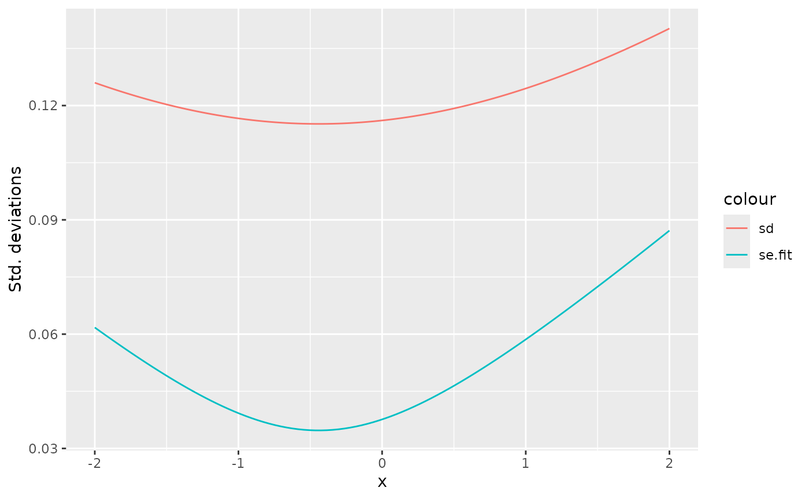

StatComp Project 2 (2022/23): Hints
Finn Lindgren
2022-04-03
Source:vignettes/Project02Hints.Rmd
Project02Hints.RmdMonte Carlo standard errors and confidence intervals
In plain Monte Carlo estimation of an expectation value, we can usually construct approximate confidence intervals by estimating the standard deviation of the estimator and construct an interval based on a Normal distribution for the estimator. However, this breaks down in some cases. For example, when using a randomisation test to estimate a p-value, the Normal approximation only works if the p-value or the number of samples are large enough, so that we actually observe non-zero counts. Fortunately, if we observe zero counts, we can construct a confidence interval using an exact method instead of relying on the Normal approximation.
Monte Carlo randomisation test variability
Let be the unknown p-value, and be the random variable for how many times we observe a randomised test statistic as extreme as or more extreme than the observed test statistic. We observe and estimate the p-value with . Then We see that the variance decreases towards when . We can control the expectation of the absolute error. Due to Jensen’s inequality (you may or may not have heard of that!) , where the last step uses that the variance is maximised for . Thus, to guarantee for some , we can choose .
The relative error has variance which goes to when , so we cannot control the relative error uniformly for all by increasing . We therefore need to be careful when assessing results for small values of .
Normal approximation
When , a basic approximate 95% confidence interval for is given by With the approximation , we can limit the interval width with by taking . For , we get .
Exact interval for
When the observed count is , we can go back to the definition of a confidence interval and how we can construct confidence intervals by “inverting a test”; the interval is taken to be the set for which the corresponding null hypothesis is not rejected.
Imagine that we reject the hypothesis for some if or (to nominally give equal tail error probability). When , the second probability is equal to , so that condition is never used. The test is therefore only rejected when . We solve for : The set of values for which the test is not rejected is , so when we can define the confidence interval for as To limit the width of such confidence intervals to at most some , we need , and . This grows much more slowly than when , so we can safely use the that’s required to bound the Normal approximation interval width and still fulfill the interval width criterion for the interval construction.
Bayesian credible interval construction
An alternative approach is to construct a Bayesian credible interval
for
.
Let
a priori. The posterior density for
given
is then proportional to
which shows that the posterior
distribution for
is
,
and a credible interval is provided by the
and
quantiles. In R,
qbeta(c(0.025, 0.975), shape1 = 1 + x, shape2 = 1 + N - x).
This construction works for all
and all
.
Prediction standard deviations
The predict() function can provide prediction standard
errors for the linear predictor, with se.fit, but those are
only half the story when predicting new data. The standard errors only
include the uncertainty information about the linear predictor curve.
For full prediction uncertainty, we need to take the observation
variation into account, which lm() estimated via the
variance of the residuals. Since the residuals for new observations is
assumed to be conditionally independent of the predictor curve, the
prediction variance can be estimated as the sum of the square of the
prediction standard error and the residual variance, if the degrees of
freedom is large. For the help text for lm() we see that
when se.fit=TRUE, the output list contains the elements
-
fit: vector or matrix (depending on theintervalargument) -
se.fit: standard error of predicted means -
residual.scale: residual standard deviations -
df: degrees of freedom for residual
# When creating a tibble, the construct can use variables defined
# first in the later variables; here we use x when constructing y:
df <- tibble(x = rnorm(10),
y = 2 + x + rnorm(10, sd = 0.1))
# Estimate a model:
fit <- lm(y ~ x, data = df)
# Compute prediction mean and standard deviations and add to df_pred:
df_pred <- data.frame(x = seq(-2, 2, length.out = 100))
pred <- predict(fit, newdata = df_pred, se.fit = TRUE)
df_pred <- df_pred %>%
mutate(mean = pred$fit,
se.fit = pred$se.fit,
sd = sqrt(pred$se.fit^2 + pred$residual.scale^2))
ggplot(df_pred) +
geom_line(aes(x, se.fit, colour = "se.fit")) +
geom_line(aes(x, sd, colour = "sd")) +
ylab("Std. deviations")
If we also ask for prediction intervals, we need to modify the code a
bit. From comparing the interval width results from
predict() with those from an interval assuming
t-distributions, we see that they are identical up to floating point
accuracy.
# Compute prediction mean and standard deviations and add to df_pred:
df_pred <- data.frame(x = seq(-2, 2, length.out = 100))
pred <- predict(fit, newdata = df_pred, se.fit = TRUE, interval = "prediction")
df_pred <- df_pred %>%
mutate(mean = pred$fit[, "fit"],
lwr = pred$fit[, "lwr"],
upr = pred$fit[, "upr"],
se.fit = pred$se.fit,
sd = sqrt(pred$se.fit^2 + pred$residual.scale^2))
ggplot(df_pred) +
geom_line(aes(x, upr - lwr - (qt(0.975, pred$df) - qt(0.025, pred$df)) * sd)) +
ylab("Interval width difference") +
xlab("x")
Handling non-Gaussian precipitation
While the assessment methods requested in the project description are
valid for non-Gaussian predictions, the non-Gaussianity of the
precipitation data is still very noticeable on the monthly average
scale. An effect of this is that the constant variance assumption of a
basic lm() model isn’t a good fit to the data. To improve
this, you can take the square root of the monthly averages before
applying the modelling in part 2. You may also do all the model and
prediction assessment on this square-root version of the data.